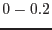
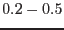
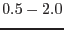
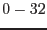

Let us assume we have an output event file produced by epframes and badpix with name rawevents_04.dat, then the simplest call to epevents is
epevents eventset=rawevents_04.dat outset=events_04.datIf you want to produce a diagnostic file containing CCD maps in 4 energy bands in the same run then you may use
epevents eventset=rawevents_04.dat outset=events_04.dat \
withphotonmap=Y photonmapset=eventmap_04.dat \
lothresh="0 200 500 0" hithresh="200 500 2000 32000" \
mappatterntype=sssn
This creates three maps with single events only
(keV, keV, keV) and one with
all non-single events in the energy range keV.
The parameters lothresh, hithresh, and
mappatterntype are used with default values.
A non-default call is
epevents eventset=rawevents_04.dat outset=events_04.dat \
withphotonmap=Y photonmapset=eventmap_04.dat \
lothresh="0 0 0 0" hithresh="32000 32000 32000 32000" \
mappatterntype=sxvw
which creates one single events map, one with doubles perpendicular
to the readout direction, and two maps with doubles in readout direction
where one has the main event near the CAMEX and the other with the
main away from the CAMEX.